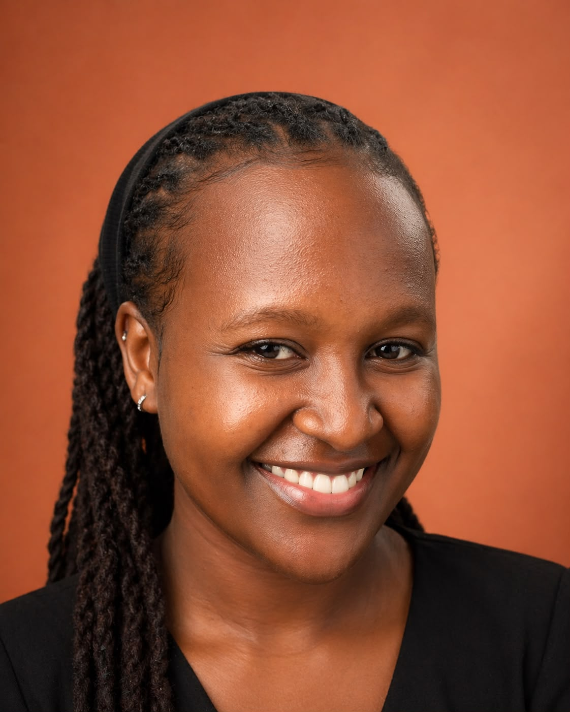

Business technology graduate who builds functional, real‑world software.
I'm Fridah Blessings Wanjiku Njoka — an IT professional with front‑end development skills in React, JavaScript, and networking fundamentals from CCNA. I like taking a system from idea to something people can actually use.

Technical, structured, and comfortable with people.
I studied Business Information Technology at Jomo Kenyatta University of Agriculture & Technology, which shaped how I think about software: not just as code, but as something built to serve a real business need and a real user.
Alongside development work, I've coordinated coding & robotics programmes for 30+ learners per cohort, provided live IT support, and led teams of 8+ people through scheduling and delegation. I bring the same structured, detail-first approach to a codebase as I do to a classroom or a team.
I'm currently looking for a role — or internship — where I can keep building real applications, sharpen my engineering fundamentals, and contribute to a team that values reliability as much as creativity.
SheMove — a women‑only ride‑hailing platform.
SheMove
Final-year project · Solo build
SheMove is a ride-hailing platform designed around rider safety, built end-to-end for my final-year project. It covers the full flow a real product needs — account handling, ride requests, and in-app payments.
- Built the front end in React with a focus on a clear, accessible booking flow
- Designed and managed the data layer in Supabase/PostgreSQL
- Integrated Safaricom's Daraja API to handle M‑Pesa payments directly in-app
- Deployed and hosted on Netlify
Where I've applied it.
Ran interactive art stations at high-traffic family venues, adapting sessions for varying group sizes and ages.
Designed and delivered structured curriculum to 30+ students per cohort — 85% project completion rate, ~30% lift in assessment scores.
Troubleshot hardware, software, and network issues; cut resolution time ~20% while applying CCNA concepts in a live environment.
Leading a team of 8+ across retreat events, managing scheduling, delegation, and cross-team communication.